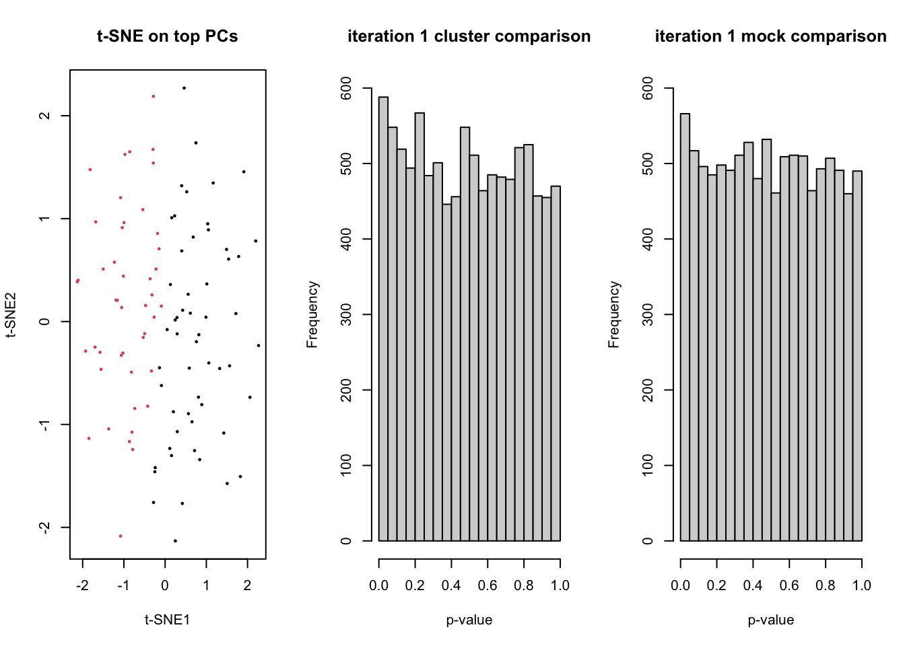
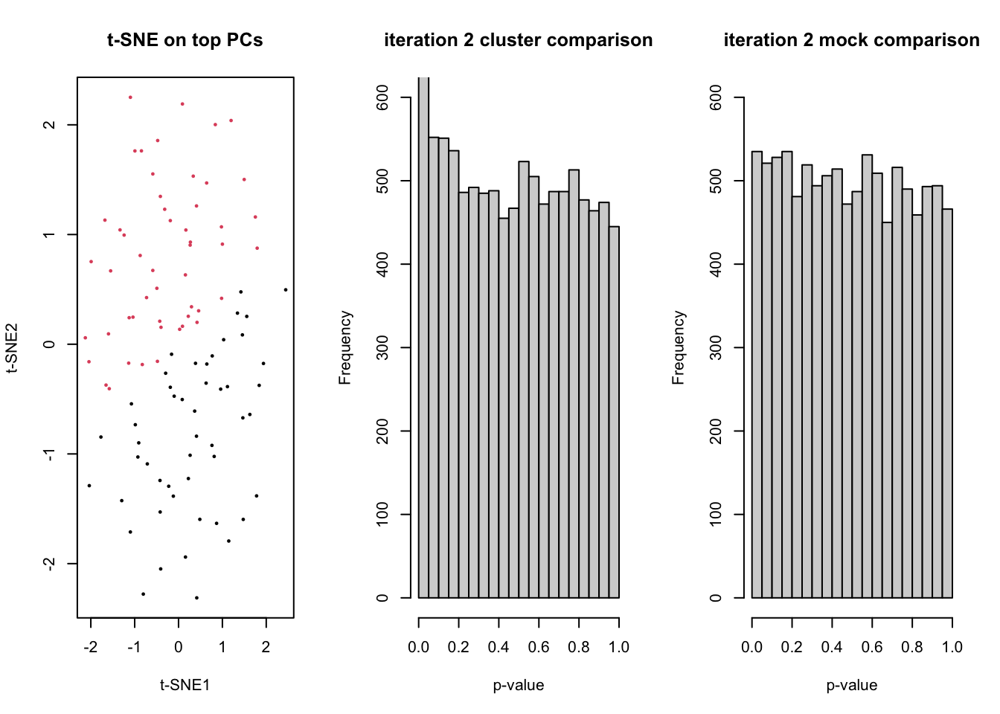
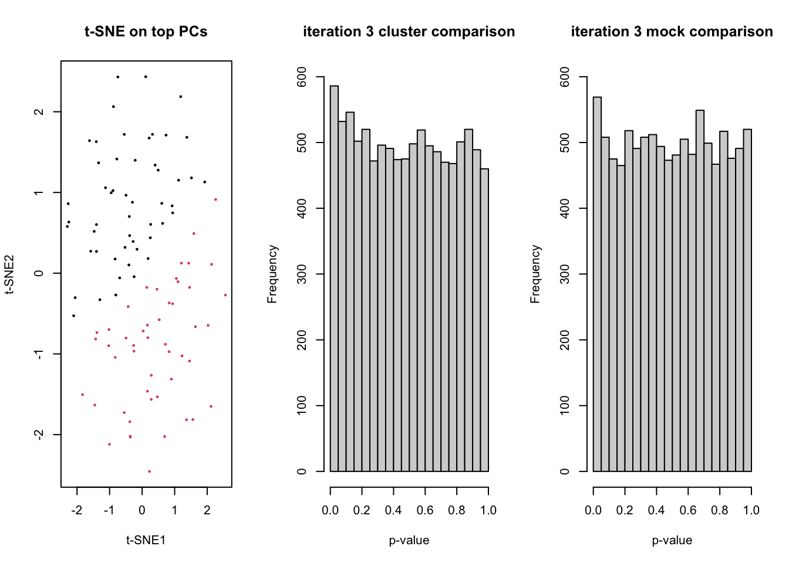
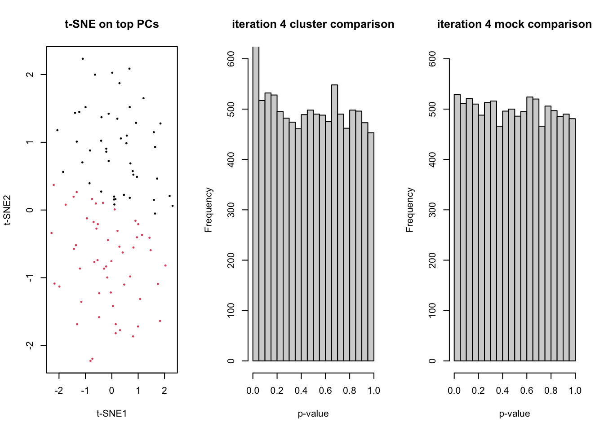
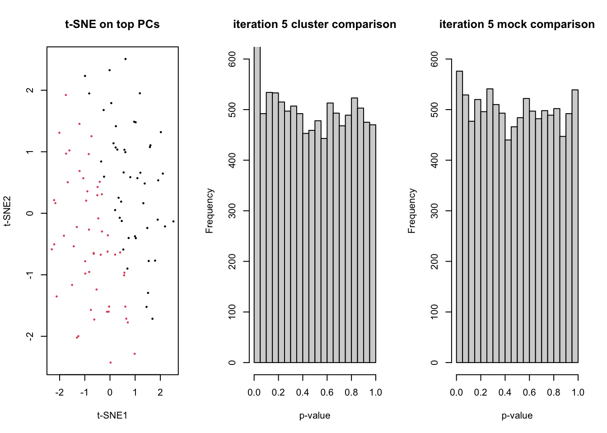

Post-selection inference
Koen Van den Berge
Last compiled on 01 December, 2021
## 'getOption("repos")' replaces Bioconductor standard repositories, see
## '?repositories' for details
##
## replacement repositories:
## CRAN: https://cran.rstudio.com## Bioconductor version 3.14 (BiocManager 1.30.16), R 4.1.2 (2021-11-01)## Installing package(s) 'DESeq2'## also installing the dependencies 'annotate', 'genefilter', 'geneplotter', 'RcppArmadillo'##
## The downloaded binary packages are in
## /var/folders/24/8k48jl6d249_n_qfxwsl6xvm0000gn/T//RtmpdpIl1P/downloaded_packages## Old packages: 'crayon', 'digest', 'glue', 'knitr', 'lattice', 'lifecycle',
## 'mgcv', 'mime', 'nlme', 'pillar', 'rlang', 'rmarkdown', 'stringi', 'tibble',
## 'tinytex', 'withr', 'xfun'runEdgeR <- function(counts, design){
d <- DGEList(counts)
d <- calcNormFactors(d)
d <- estimateDisp(d, design)
fit <- glmFit(d, design)
lrt <- glmLRT(fit, coef=2)
return(lrt)
}
# simulate data according to a negative binomial distribution
set.seed(99)
n <- 1e4 #number of genes
m <- 100 #number of cells
fprCluster <- c()
fprMock <- c()
par(mfrow=c(1,3))
for(ii in 1:5){
dss <- DESeq2::makeExampleDESeqDataSet(n=n, m=m)
counts <- assays(dss)$counts
# t-SNE on top PCs
tsneDR <- Rtsne(log1p(t(counts)))
# cluster in t-SNE space
km <- kmeans(tsneDR$Y, centers=2)
group <- as.factor(km$cluster)
plot(tsneDR$Y, col=group, pch=16, cex=1/2, main="t-SNE on top PCs", xlab="t-SNE1", ylab="t-SNE2")
# DE based on clustering
design <- model.matrix(~group)
lrt <- runEdgeR(counts, design)
hist(lrt$table$PValue, main=paste("iteration",ii,"cluster comparison"), ylim=c(0,600), xlab="p-value")
fprCluster[ii] <- sum(lrt$table$PValue <= 0.05)
# mock DE
mock <- as.factor(rep(1:2,each=m/2))
designMock <- model.matrix(~mock)
lrtMock <- runEdgeR(counts, designMock)
hist(lrtMock$table$PValue, main=paste("iteration",ii,"mock comparison"), ylim=c(0,600), xlab="p-value")
Sys.sleep(1)
fprMock[ii] <- sum(lrtMock$table$PValue <= 0.05)
}
par(mfrow=c(1,1))
boxplot(cbind(fprCluster, fprMock)/n, names=c("cluster-based", "random"), ylab="False positive rate")
## R version 4.1.2 (2021-11-01)
## Platform: x86_64-apple-darwin17.0 (64-bit)
## Running under: macOS Catalina 10.15.7
##
## Matrix products: default
## BLAS: /Library/Frameworks/R.framework/Versions/4.1/Resources/lib/libRblas.0.dylib
## LAPACK: /Library/Frameworks/R.framework/Versions/4.1/Resources/lib/libRlapack.dylib
##
## locale:
## [1] en_US.UTF-8/en_US.UTF-8/en_US.UTF-8/C/en_US.UTF-8/en_US.UTF-8
##
## attached base packages:
## [1] stats4 stats graphics grDevices datasets utils methods
## [8] base
##
## other attached packages:
## [1] edgeR_3.36.0 limma_3.50.0
## [3] Rtsne_0.15 DESeq2_1.34.0
## [5] SummarizedExperiment_1.24.0 Biobase_2.54.0
## [7] MatrixGenerics_1.6.0 matrixStats_0.61.0
## [9] GenomicRanges_1.46.1 GenomeInfoDb_1.30.0
## [11] IRanges_2.28.0 S4Vectors_0.32.3
## [13] BiocGenerics_0.40.0 rmarkdown_2.10
## [15] knitr_1.33
##
## loaded via a namespace (and not attached):
## [1] httr_1.4.2 sass_0.4.0 bit64_4.0.5
## [4] jsonlite_1.7.2 splines_4.1.2 bslib_0.3.1
## [7] assertthat_0.2.1 highr_0.9 BiocManager_1.30.16
## [10] blob_1.2.2 renv_0.14.0 GenomeInfoDbData_1.2.7
## [13] yaml_2.2.1 pillar_1.6.2 RSQLite_2.2.8
## [16] lattice_0.20-44 glue_1.4.2 digest_0.6.27
## [19] RColorBrewer_1.1-2 XVector_0.34.0 colorspace_2.0-2
## [22] htmltools_0.5.2 Matrix_1.3-4 pkgconfig_2.0.3
## [25] XML_3.99-0.8 genefilter_1.76.0 zlibbioc_1.40.0
## [28] purrr_0.3.4 xtable_1.8-4 scales_1.1.1
## [31] BiocParallel_1.28.2 tibble_3.1.4 annotate_1.72.0
## [34] KEGGREST_1.34.0 generics_0.1.1 ggplot2_3.3.5
## [37] ellipsis_0.3.2 cachem_1.0.6 survival_3.2-13
## [40] magrittr_2.0.1 crayon_1.4.1 memoise_2.0.1
## [43] evaluate_0.14 fansi_0.5.0 tools_4.1.2
## [46] lifecycle_1.0.0 stringr_1.4.0 locfit_1.5-9.4
## [49] munsell_0.5.0 DelayedArray_0.20.0 AnnotationDbi_1.56.2
## [52] Biostrings_2.62.0 compiler_4.1.2 jquerylib_0.1.4
## [55] rlang_0.4.11 grid_4.1.2 RCurl_1.98-1.5
## [58] bitops_1.0-7 gtable_0.3.0 DBI_1.1.1
## [61] R6_2.5.1 dplyr_1.0.7 utf8_1.2.2
## [64] fastmap_1.1.0 bit_4.0.4 stringi_1.7.4
## [67] parallel_4.1.2 Rcpp_1.0.7 vctrs_0.3.8
## [70] geneplotter_1.72.0 png_0.1-7 tidyselect_1.1.1
## [73] xfun_0.25LS0tCnRpdGxlOiAiUG9zdC1zZWxlY3Rpb24gaW5mZXJlbmNlIgphdXRob3I6ICJLb2VuIFZhbiBkZW4gQmVyZ2UiCmRhdGU6ICJMYXN0IGNvbXBpbGVkIG9uIGByIGZvcm1hdChTeXMudGltZSgpLCAnJWQgJUIsICVZJylgIgpvdXRwdXQ6IAogIGh0bWxfZG9jdW1lbnQ6CiAgICB0b2M6IHRydWUKICAgIHRvY19mbG9hdDogdHJ1ZQogIHBkZl9kb2N1bWVudDoKICAgIHRvYzogdHJ1ZQogICAgbnVtYmVyX3NlY3Rpb25zOiB0cnVlCiAgICBsYXRleF9lbmdpbmU6IHhlbGF0ZXgKLS0tCgpgYGB7ciBmdW5jdGlvbnMsIGluY2x1ZGU9RkFMU0V9CiMgQSBmdW5jdGlvbiBmb3IgY2FwdGlvbmluZyBhbmQgcmVmZXJlbmNpbmcgaW1hZ2VzCmZpZyA8LSBsb2NhbCh7CiAgICBpIDwtIDAKICAgIHJlZiA8LSBsaXN0KCkKICAgIGxpc3QoCiAgICAgICAgY2FwPWZ1bmN0aW9uKHJlZk5hbWUsIHRleHQpIHsKICAgICAgICAgICAgaSA8PC0gaSArIDEKICAgICAgICAgICAgcmVmW1tyZWZOYW1lXV0gPDwtIGkKICAgICAgICAgICAgcGFzdGUoIkZpZ3VyZSAiLCBpLCAiOiAiLCB0ZXh0LCBzZXA9IiIpCiAgICAgICAgfSwKICAgICAgICByZWY9ZnVuY3Rpb24ocmVmTmFtZSkgewogICAgICAgICAgICByZWZbW3JlZk5hbWVdXQogICAgICAgIH0pCn0pCmBgYCAKCmBgYHtyLCBlY2hvPUZBTFNFLCBldmFsPVRSVUV9CmlmKCEiQmlvY01hbmFnZXIiICVpbiUgaW5zdGFsbGVkLnBhY2thZ2VzKClbLDFdKXsKICBpbnN0YWxsLnBhY2thZ2VzKCJCaW9jTWFuYWdlciIpCn0KaWYoISJERVNlcTIiICVpbiUgaW5zdGFsbGVkLnBhY2thZ2VzKClbLDFdKXsKICBCaW9jTWFuYWdlcjo6aW5zdGFsbCgiREVTZXEyIikKfQppZighIlJ0c25lIiAlaW4lIGluc3RhbGxlZC5wYWNrYWdlcygpWywxXSl7CiAgQmlvY01hbmFnZXI6Omluc3RhbGwoIlJ0c25lIikKfQppZighImVkZ2VSIiAlaW4lIGluc3RhbGxlZC5wYWNrYWdlcygpWywxXSl7CiAgQmlvY01hbmFnZXI6Omluc3RhbGwoImVkZ2VSIikKfQoKc3VwcHJlc3NQYWNrYWdlU3RhcnR1cE1lc3NhZ2VzKHsKICBsaWJyYXJ5KGtuaXRyKQogIGxpYnJhcnkocm1hcmtkb3duKQogIGxpYnJhcnkoREVTZXEyKQogIGxpYnJhcnkoUnRzbmUpCiAgbGlicmFyeShlZGdlUikKfSkKYGBgCgpgYGB7cn0KCgpydW5FZGdlUiA8LSBmdW5jdGlvbihjb3VudHMsIGRlc2lnbil7CiAgZCA8LSBER0VMaXN0KGNvdW50cykKICBkIDwtIGNhbGNOb3JtRmFjdG9ycyhkKQogIGQgPC0gZXN0aW1hdGVEaXNwKGQsIGRlc2lnbikKICBmaXQgPC0gZ2xtRml0KGQsIGRlc2lnbikKICBscnQgPC0gZ2xtTFJUKGZpdCwgY29lZj0yKQogIHJldHVybihscnQpCn0KCiMgc2ltdWxhdGUgZGF0YSBhY2NvcmRpbmcgdG8gYSBuZWdhdGl2ZSBiaW5vbWlhbCBkaXN0cmlidXRpb24Kc2V0LnNlZWQoOTkpCm4gPC0gMWU0ICNudW1iZXIgb2YgZ2VuZXMKbSA8LSAxMDAgI251bWJlciBvZiBjZWxscwpmcHJDbHVzdGVyIDwtIGMoKQpmcHJNb2NrIDwtIGMoKQpwYXIobWZyb3c9YygxLDMpKQpmb3IoaWkgaW4gMTo1KXsKICBkc3MgPC0gREVTZXEyOjptYWtlRXhhbXBsZURFU2VxRGF0YVNldChuPW4sIG09bSkKICBjb3VudHMgPC0gYXNzYXlzKGRzcykkY291bnRzCiAgCiAgIyB0LVNORSBvbiB0b3AgUENzCiAgdHNuZURSIDwtIFJ0c25lKGxvZzFwKHQoY291bnRzKSkpCiAgCiAgIyBjbHVzdGVyIGluIHQtU05FIHNwYWNlCiAga20gPC0ga21lYW5zKHRzbmVEUiRZLCBjZW50ZXJzPTIpCiAgZ3JvdXAgPC0gYXMuZmFjdG9yKGttJGNsdXN0ZXIpCiAgcGxvdCh0c25lRFIkWSwgY29sPWdyb3VwLCBwY2g9MTYsIGNleD0xLzIsIG1haW49InQtU05FIG9uIHRvcCBQQ3MiLCB4bGFiPSJ0LVNORTEiLCB5bGFiPSJ0LVNORTIiKQogIAogICMgREUgYmFzZWQgb24gY2x1c3RlcmluZwogIGRlc2lnbiA8LSBtb2RlbC5tYXRyaXgofmdyb3VwKQogIGxydCA8LSBydW5FZGdlUihjb3VudHMsIGRlc2lnbikKICBoaXN0KGxydCR0YWJsZSRQVmFsdWUsIG1haW49cGFzdGUoIml0ZXJhdGlvbiIsaWksImNsdXN0ZXIgY29tcGFyaXNvbiIpLCB5bGltPWMoMCw2MDApLCB4bGFiPSJwLXZhbHVlIikKICBmcHJDbHVzdGVyW2lpXSA8LSBzdW0obHJ0JHRhYmxlJFBWYWx1ZSA8PSAwLjA1KQogIAogICMgbW9jayBERQogIG1vY2sgPC0gYXMuZmFjdG9yKHJlcCgxOjIsZWFjaD1tLzIpKQogIGRlc2lnbk1vY2sgPC0gbW9kZWwubWF0cml4KH5tb2NrKQogIGxydE1vY2sgPC0gcnVuRWRnZVIoY291bnRzLCBkZXNpZ25Nb2NrKQogIGhpc3QobHJ0TW9jayR0YWJsZSRQVmFsdWUsIG1haW49cGFzdGUoIml0ZXJhdGlvbiIsaWksIm1vY2sgY29tcGFyaXNvbiIpLCB5bGltPWMoMCw2MDApLCB4bGFiPSJwLXZhbHVlIikKICBTeXMuc2xlZXAoMSkKICBmcHJNb2NrW2lpXSA8LSBzdW0obHJ0TW9jayR0YWJsZSRQVmFsdWUgPD0gMC4wNSkKfQpwYXIobWZyb3c9YygxLDEpKQpib3hwbG90KGNiaW5kKGZwckNsdXN0ZXIsIGZwck1vY2spL24sIG5hbWVzPWMoImNsdXN0ZXItYmFzZWQiLCAicmFuZG9tIiksIHlsYWI9IkZhbHNlIHBvc2l0aXZlIHJhdGUiKQpgYGAKCgpgYGB7cn0Kc2Vzc2lvbkluZm8oKQpgYGAKCg==